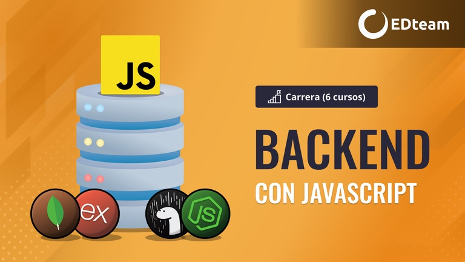
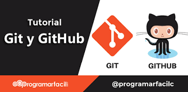

HTML Y CSS
De manera coloquial, HTML es el lenguaje con el que se “escribe” la inmensa mayoría de páginas web a las que se accede desde internet. Los programadores las crean y más tarde, cuando los usuarios acceden a ellas a través de un navegador, este interpreta dicho lenguaje para mostrarlo de forma clara y ordenada.
En cuanto a CSS (del inglés Cascading Style Sheets u “hojas de estilo en cascada”), es el lenguaje de marcado que determina el aspecto con el que se visualiza el contenido de un sitio web. Esto pasa por elementos como el color, estilos de letra o imágenes, entre muchos otros, y su código se conjuga con el de HTML para crear páginas completas.

JAVASCRIPT
JavaScript es un lenguaje de programación o de secuencias de comandos que te permite implementar funciones complejas en páginas web, cada vez que una página web hace algo más que sentarse allí y mostrar información estática para que la veas, muestra oportunas actualizaciones de contenido, mapas interactivos, animación de Gráficos 2D/3D, desplazamiento de máquinas reproductoras de vídeo, etc., puedes apostar que probablemente JavaScript está involucrado. Es la tercera capa del pastel de las tecnologías web estándar, dos de las cuales (HTML y CSS) hemos cubierto con mucho más detalle en otras partes del Área de aprendizaje.

GITHUB
En resumen, GitHub es un servicio basado en la nube que aloja un sistema de control de versiones (VCS) llamado Git. Éste permite a los desarrolladores colaborar y realizar cambios en proyectos compartidos, a la vez que mantienen un seguimiento detallado de su progreso.
